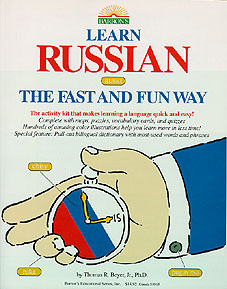

Page index / publications
Fast and fun way to learn Russian

Learn Russian the Fast and Fun Way Activity kit including text and four cassettes.(Barron's: 1993)
ISBN 0-8120-7857-8
Language learning made fun with maps, puzzles, tear out vocabularly cards and a pull-out bilingual dictionary with a special section for ordering food in a restaurant.
Listen to the audio selections: 1, 2, 3, 4, 5, 6, 7, 8